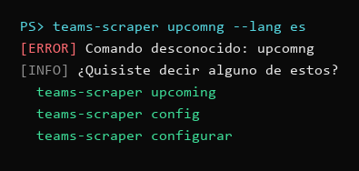

Referencia de comandos
Cada comando lee una cosa. all junta varias. Los chats no entran en all.
| Comando | Qué lee | Navegador |
|---|---|---|
upcoming | Tareas que todavía no vencen. | Sí |
past-due | Tareas fuera de fecha. | Sí |
completed | Tareas ya entregadas. | Sí |
activity | Avisos desde la última lectura. | Sí |
channels | Publicaciones, archivos, canales y notas. | Sí |
chats | Mensajes de los chats que permitiste. | Sí |
downloads | De dónde salen los archivos ya guardados. | No |
sync | Copia el catálogo a la base y reescribe activity.json si hay avisos. | No |
open | Abre Teams y espera. No lee nada. | Sí |
all | Actividad, próximas, vencidas, entregadas y canales. | Sí |
init | Idioma, navegador, clases, chats, carpeta y descargas. | Sí, para marcar clases |
config | Cambia un campo guardado. | No |
revert | Devuelve la config anterior. | No |
Otros nombres
| Escribes | Es |
|---|---|
todo | all |
canales | channels |
abrir | open |
descargas | downloads |
sincronizar-bd | sync |
pastdue | past-due |
inicio, iniciar | init |
ayuda | help |
configurar, editar | config |
revertir, deshacer | revert |
Ejemplos
teams-scraper upcoming
teams-scraper channels -s hist -p posts,grades
teams-scraper chats --chat all
teams-scraper upcoming --lang es --limit 1
teams-scraper config
teams-scraper revertchannels sin una clase se detiene con subjects.missing. chats sin --chat se detiene con chats.missing. Las banderas están en Opciones.
Qué imprime una corrida
El encabezado dice el modo, el navegador y la hora. Cada paso va marcado. Al final hay un resumen: estado, modo, elementos y duración.
| Inglés | Con --lang es | Qué significa |
|---|---|---|
STEP | PASO | Un paso en curso. |
OK | OK | Ese paso terminó. |
INFO | INFO | Un dato, por ejemplo una tarjeta ya guardada que se salta. |
NOTE | AVISO | Algo que limita la corrida. |
COMPLETE | COMPLETA | Los pasos terminaron. |
PARTIAL | PARCIAL | Un paso se saltó o se limitó. |
FAILED | FALLIDA | La corrida se detuvo. La nota es code: frase. |
--limit lee esa cantidad de tareas y deja la copia JSON anterior en su sitio. Una tarjeta que ya está completa se salta, con las excepciones de cada lista. Una lectura a medias no sustituye un valor guardado por uno vacío.

Una bandera mala o un comando desconocido sale con estado 2 y sugiere un nombre cercano. Una lectura que falla sale con estado 1 e imprime code: frase.
